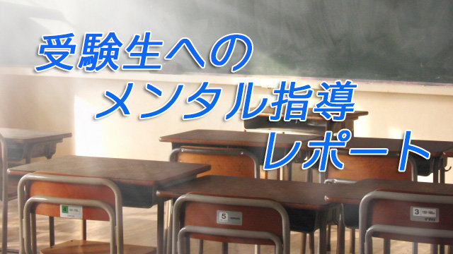

先日とある高校から依頼を受け、受験を控えた高3生のメンタル強化指導に行ってきました。
受験生のメンタル強化などというと、何か物々しい感じがするけど、私の行ったのは「指導」というよりリラックス効果を狙った「楽しめる講座」でした。なぜならこの時期は学力を上げることより、持っている力を最大限発揮させることのほうが大切だからで、そのためには力みすぎず肩の力を抜くことが必要と考えたからに他なりません。
しかし、最初は初対面の故に微妙な緊張感が走ります。
私が人間には頭で考える表層意識と、自覚できないけど大きな力をもつ潜在意識の2つがあると話すと、生徒たちは熱心に聴きながらも「何やら難しい話だな」という構えた姿勢も見せ始める。
ところが配付したワークシートに記入させる段になると様相は一変。あちこちから笑い声や喚声やらが沸き起こり、しばし騒然という有り様。
シートは2枚あり、1枚目は次の通り。
①人生で楽しかったこと嬉しかったことを書く
②そのときの状況を絵に描く
③そのときどんな感情感覚（身体感覚）だったか
ここでは自由に率直に、自分の人生で忘れられない楽しい嬉しいことを語り絵にしながらその感覚を思い出し表現すること。たくさんあるなら全部書きなさいと言ったことで、彼らは書きながら互いの思い出や絵を見比べたりして盛り上がっていたのだ。
私や同席した他の先生方も生徒たちのシートを見て回りながら大いに楽しませてもらった。
「家族と行ったディズニーランドで1日中遊んだこと」「部活で関東大会に出場が決まったとき」「両親に自分の気持ちを理解してもらったこと」などが並び、中には「友だちとカラオケで思い切り歌った」「彼女と楽しく過ごした瞬間」（男の子）などと青春を謳歌する文言もあった（笑）。
その場面を絵にしたりそのときの気分感覚を言葉にすることで、40人ほどの教室は盛り上がりもピークに…。
次いで2枚目のシートに移る。2枚目のシートのテーマは①緊張した場面（テストや部活の大会前など）で自分はどう感じるか ②将来の夢 ③夢を達成することで何を感じたいかというもの。
ここに来て緊張もほぐれた生徒たちは2枚目もスラスラと楽しそうに書いていく。
①については「手に汗をかく」「心臓がバクバクする」「頭が真っ白になる」というありがちなものから「なぜかアクビが出る」「景色が揺れる」（笑）まで色々な反応が書かれていた。
②については、職業に限らずどんなことをやってみたいか書けと言ったせいか思ったより皆よく書いていた。プライバシーの観点から詳述は避けるが、職業も含めて多種多彩な夢や希望があることを知り少し感動した。
最後の「達成することで何を感じたいか」はその夢を実現することで本当は何を感じたいのか、つまり自分の価値観を知って欲しい主旨から聞いたもの。
何人かの子がどう書いてよいか分からないと言うので「やりたい夢すべてに共通するものを考えてごらん」とヒントを与えた。
一人の女子が「やりたいことがたくさんありすぎて共通項が分からない。皆バラバラだから」と訴える。そこで私が彼女の「夢」をのぞきこむと海外を飛び回る、企画や提案する仕事、気球に乗る、美味しい料理をつくるなどが並んでいる。確かにバラバラだ（笑）。
「う～ん、共通項は人生を楽しむことじゃない？」と言うと、あーと彼女は大納得。腑に落ちた表情だった。
ところでこれらのシートを書くことに何の意味があるのか。メンタル強化とどうつながるというのか。
結論を言えば己を知ることに尽きる。まず自分を知らなければ、己が日頃どういう立ち位置にいるのか知らなければ自らをコントロールすることはできない。
身体感覚に気づきイメージを喚起する
たとえば嬉しいとき楽しいとき、自分はどんな感覚を味わっているのか。緊張（プレッシャー）を強いられる場面で自分はどんな身体感覚を感じているのか。私たちは強い感情（情動）を感じていながら意外にもそのことに気づいていない。日頃感情をあからさまにすることを禁じられているために、感情そのものを抑えつける習慣が根づいているためだ。
そうして多くの人が感情や感覚それ自体を感じなくなってしまう。これはマズい。とても危険なことだ。なぜならたとえば不安を感じているのに自覚しないということは不安に飲み込まれているのに気づかないことになり、当然パフォーマンスは低下する。力が発揮できない。
メンタルを強化するとき重要なのは、言葉で励ましたり叱咤することよりイメージを描くことであり、イメージ力は感情に大きく影響を受ける。
そこで身体感覚に注目させる。言葉は人をダマすことができるが身体感覚は嘘をつかない。先の例で言うなら、試験前や試合前に「手が震える」「お腹が痛くなる」「頭が真っ白」などという身体の兆候が「不安」の存在を教えてくれるわけだ。
そこで「あー自分はいま不安なんだ」と知れば逆に不安は軽減する。気づくだけで消えることも多い。気づかなければ飲み込まれる。
私はこの日生徒たちに自分がいま不安だ、緊張していると身体感覚を通じて知れば、すかさず「来た来た、来たァ」と言ってみようと勧めた。実際言葉は何でもよい。「よっしゃー」でも「よし来い！」でも「不安ちゃんいらっしゃい」（笑）でもよいのだ。むしろ「不安」を楽しむくらいの余裕が欲しい。
スポーツでも芸術でも一流の人たちは皆このように、プレッシャーを力に変える術を知っている。逆に言えば、不安や緊張、失敗への恐怖を力に代えられるからこそ高いパフォーマンスが発揮できるわけだ。
なのでこの日、生徒たちに感情や感覚を想起させたり絵に描かせたりしたのは、この身体感覚とイメージ喚起力を強化するためだった。
ひとしきり教室が盛り上がった後、私は日々の目標を書いた紙を毎日声に出して読み上げること（アファメーション）、日課をチェックすることを入試まで続けるよう指示して講座を終えた。
この最後の30分は、それまでの喧騒とは打って変わって驚くほどの静寂が支配していた。最初のややぎこちない雰囲気はそこになく、生徒たちは食い入るような眼差しで私を見、一言も漏らすまいと耳を傾けていた。
これこそがリラックスと集中というメンタルの理想形態だと感じた。
講座内容そのものよりも、この日90分間の時間で見せてくれた生徒たちの一連の態度の変遷、緊張→リラックス→集中こそが高いパフォーマンスに必要なメンタル形成そのものを示していたと私は感じた。
彼らに感謝すると共に栄冠を期待したい